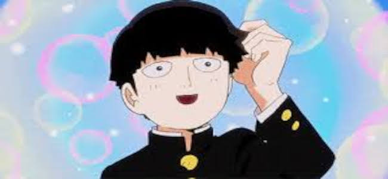
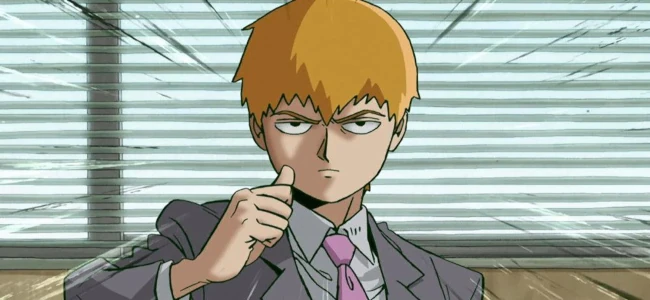
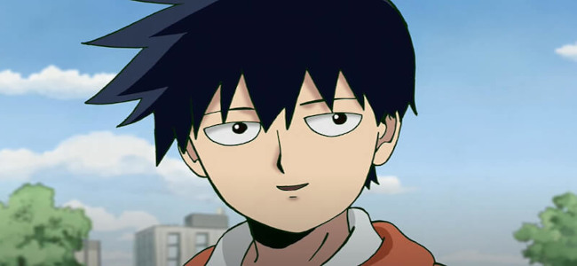
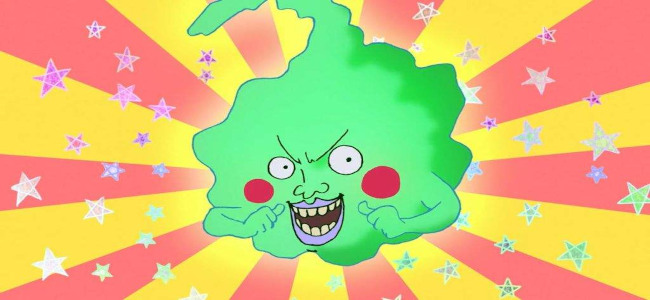

Shigeo Kageyama, mais conhecido como Mob, é o protagonista do anime Mob Psycho 100, criado por ONE, o mesmo autor de One Punch Man. À primeira vista, Mob é um adolescente comum, tímido e socialmente desajeitado, mas dentro de si reside um poder psíquico absolutamente devastador. Desde criança, ele tem habilidades paranormais incrivelmente fortes, capazes de destruir cidades inteiras. Justamente por isso, Mob decide reprimir suas emoções, acreditando que manter-se calmo e controlado é a única forma de proteger os outros — e a si mesmo — das consequências de seu poder incontrolável.

Ao longo da série, Mob embarca em uma jornada profunda de autodescoberta. Apesar de seus poderes sobrenaturais, ele deseja apenas viver uma vida normal, fazer amigos, melhorar fisicamente e conquistar o amor de sua infância. Guiado por seu mentor trapaceiro, Reigen Arataka, Mob aprende que a verdadeira força está em seu caráter, não em seus poderes. O crescimento emocional de Mob é o cerne da narrativa: ele enfrenta não apenas vilões e outras ameaças sobrenaturais, mas também suas inseguranças, traumas e o medo de perder o controle. Essa mistura de fragilidade emocional com poder ilimitado faz de Mob um protagonista único — humilde, sensível e, paradoxalmente, um dos personagens mais fortes dos animes modernos.
Arataka Reigen
Arataka Reigen é um dos personagens mais carismáticos e complexos de Mob Psycho 100, servindo como mentor, figura paterna e, muitas vezes, alívio cômico da série. Apresentado inicialmente como um charlatão que finge ser um poderoso médium espiritual, Reigen administra o “Centro de Consultoria de Espíritos e Afins” e contrata Mob como seu assistente. Embora ele mesmo não possua poderes psíquicos, Reigen é extremamente persuasivo, inteligente e habilidoso em manipular situações a seu favor — com um talento notável para improvisação e discurso convincente.

Apesar de sua fachada enganadora, Reigen se revela uma figura surpreendentemente ética e protetora. Ele reconhece o imenso poder de Mob e, ao invés de explorá-lo, busca guiá-lo para que cresça como uma pessoa equilibrada, sempre reforçando que os poderes não definem o valor de alguém. Ao longo da série, sua hipocrisia inicial dá lugar a uma profundidade emocional inesperada, e seus conselhos, mesmo que venham de um “farsante”, muitas vezes contêm verdades valiosas. Reigen simboliza a ideia de que a sabedoria e o impacto que alguém tem sobre os outros não dependem apenas de habilidades sobrenaturais, mas de empatia, humanidade e a capacidade de reconhecer e apoiar o crescimento dos que estão ao seu redor.
Ritsu Kageyama
Ritsu Kageyama é o irmão mais novo de Shigeo (Mob) em Mob Psycho 100, e sua trajetória é marcada por uma evolução complexa e emocionalmente profunda. Ao contrário de Mob, Ritsu é inteligente, articulado e socialmente bem-sucedido, sendo um dos alunos exemplares da escola. No entanto, por trás de sua aparência confiante, ele guarda um sentimento de inveja e frustração por não possuir os mesmos poderes psíquicos extraordinários do irmão. Desde pequeno, Ritsu admirava — e ao mesmo tempo temia — os poderes de Mob, desenvolvendo uma relação ambígua com sua própria identidade.

Esse desejo reprimido por poderes eventualmente se manifesta quando Ritsu desperta habilidades psíquicas latentes, o que o leva por um breve caminho de arrogância e conflito interno. No entanto, com o tempo, ele começa a reconhecer o peso emocional que Mob carrega por ser tão poderoso, e sua visão muda completamente. Ritsu amadurece ao entender que sua força verdadeira não está em superar o irmão, mas em apoiá-lo e ser fiel a seus próprios princípios. Sua jornada é uma reflexão sobre inveja, aceitação e o amor fraternal, tornando-o um personagem essencial para o crescimento emocional e humano de Mob — e da narrativa como um todo.
Covinhas
Covinhas (ou Dimple no original) é um espírito maligno carismático e peculiar em Mob Psycho 100, cuja presença traz tanto humor quanto tensão à história. Inicialmente introduzido como um antagonista, Covinhas era um poderoso espírito que liderava um culto religioso e buscava ser adorado como uma divindade. No entanto, após ser derrotado por Mob de forma quase humilhante, ele perde grande parte de seus poderes e decide acompanhá-lo, com a intenção de manipulá-lo e eventualmente recuperar sua força. Apesar desse começo interesseiro, Covinhas acaba se tornando um aliado inesperado — e muitas vezes um conselheiro mordaz — de Mob.

Ao longo da série, Covinhas passa por uma evolução notável. Seu cinismo e ambições egoístas vão sendo gradualmente substituídos por um tipo de lealdade sincera, especialmente conforme ele observa o crescimento emocional de Mob. Embora ainda mantenha seu jeito sarcástico e oportunista, Covinhas demonstra coragem e até altruísmo em momentos cruciais, provando que mesmo um espírito maligno pode mudar. Sua complexidade está justamente nesse equilíbrio entre humor, ego e redenção, o que o torna um dos personagens mais imprevisíveis e queridos da série. Em essência, Covinhas representa a ideia de que nem toda transformação vem do arrependimento — às vezes, ela nasce da convivência e do afeto inesperado.
Toichiro Suzuki
Toichiro Suzuki é o principal antagonista do arco final de Mob Psycho 100 e líder da organização criminosa Claw, grupo formado por poderosos paranormais com a ambição de dominar o mundo. Ao contrário de muitos vilões impulsivos, Toichiro é frio, calculista e absolutamente convencido de sua superioridade. Ele acredita que os poderosos, como ele, têm o direito — e até o dever — de governar os fracos. Sua ideologia gira em torno da meritocracia baseada em poder psíquico, o que o coloca em completo contraste com os valores de Mob, que acredita no crescimento pessoal, na empatia e na igualdade entre as pessoas, com ou sem poderes.
Toichiro é um espelho distorcido do que Mob poderia se tornar se usasse seus poderes para controle e dominação. Extremamente poderoso, ele alimenta seus próprios poderes com emoções reprimidas, assim como Mob, mas sem qualquer desejo de equilíbrio ou conexão emocional. No clímax do confronto entre os dois, sua incapacidade de lidar com emoções humanas — especialmente fraqueza, fracasso e afeto — acaba sendo sua ruína. Sua derrota não vem apenas da força bruta de Mob, mas do contraste entre dois mundos: um construído pela empatia e outro pela tirania. Toichiro, apesar de sua ameaça física, funciona principalmente como um vilão ideológico, e sua queda reforça a mensagem central da série: o verdadeiro poder está em aceitar a si mesmo e crescer emocionalmente.